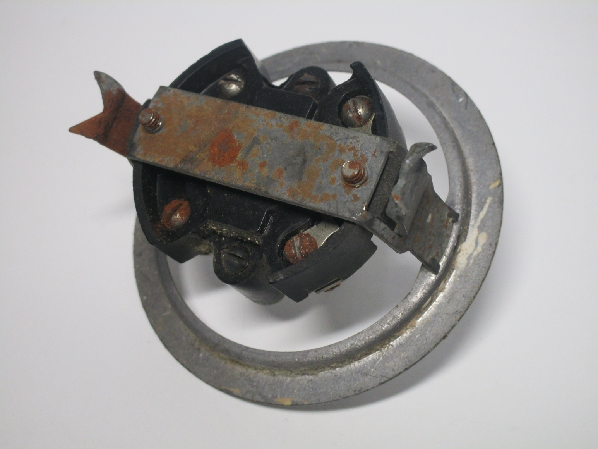

Old Italian electrical accessories
The so-called "round box" was the earliest type of wall box in use in Italy, and was common in most of Continental Europe, where it's still in use today (with a few improvements). However, in Italy, it was replaced by rectangular boxes (derived from the American standard) in the late 60s-70s.
Early devices meant for wall boxes were often a more premium alternative to ones that mounted externally to the wall, which was at the time much more common, likely because it was easier to retrofit.
Compared to later models, whose styling was designed to be visible and look good inside a room, these early electrical accessories instead did the opposite, trying their best to be hidden from sight. As such, they were often made with a clear (glass, and later plastic) front piece, to be easier to conceal behind a wallpaper, with only the bare miniumum being visible.
Early glass power socket
Rating: unknown
This power socket is an excellent example of how these early ones used to work. It's made of various materials: the frame is made of metal, with a ceramic part on the back to hold the contacts. The front cover is glass and mouunted using two threaded bakelite rings, which screw onto the contacts of the socket.
Of course, the fact that the front cover is only held by those bakelite pieces, which can be unscreweed by hand, is quite dangerous, as once removed the live connections are revealed.
{kind=link}

{kind=link}
BTicino lever light switch
Rating: 6A 250V

{kind=link}

Rotary light switch
Rating: unknown
{kind=link}
{kind=link}
{kind=link}
BTicino glass doorbell
Rating: 6A 250V

{kind=link}

Glass and bakelite light switch
Rating: 6A 250V


Three phase power socket
Rating: likely 15A 380V

Double light switch
Rating: 6A 250V